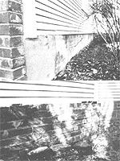

LEFT: This section of a brick foundation was plastered over with a quarter inch of mortar. RIGHT: The rotted grout was removed from around the bricks and replaced by pointing (a technique that involves putting new mortar in the cracks and blending it to resemble the old mud).